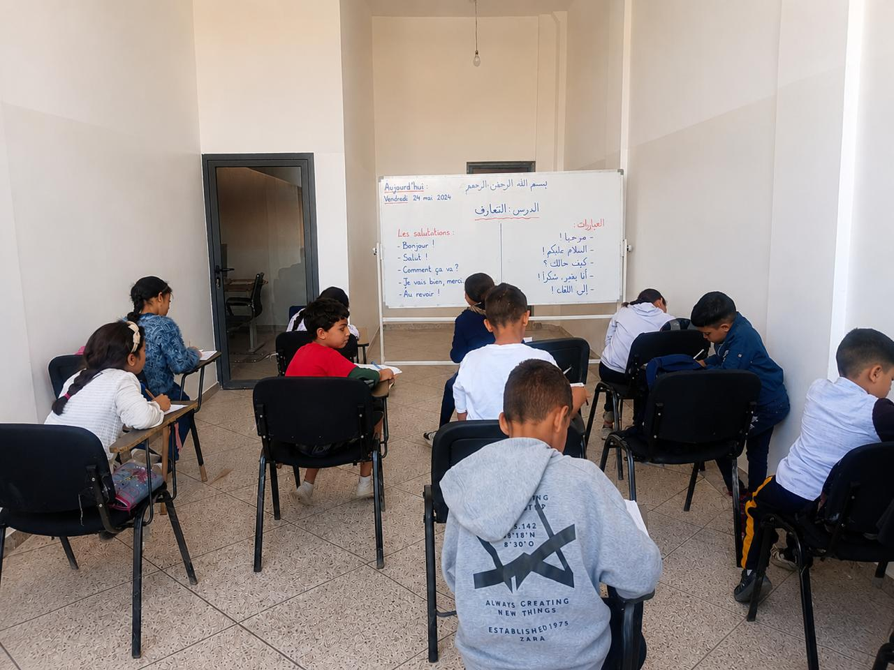

Nos actions
Des projets concrets, un impact réel
Découvrez quelques-unes de nos actions phares menées sur le terrain au profit des orphelins et des personnes en difficulté.

Parrainage d'orphelins
Un accompagnement mensuel pour assurer l'éducation et le bien-être de chaque enfant parrainé.
Découvrir le projet
Distributions alimentaires
Des paniers alimentaires distribués chaque mois aux familles en situation de précarité.
Découvrir le projet
Caravanes médicales
Des journées de consultations médicales gratuites organisées dans les zones reculées.
Découvrir le projet